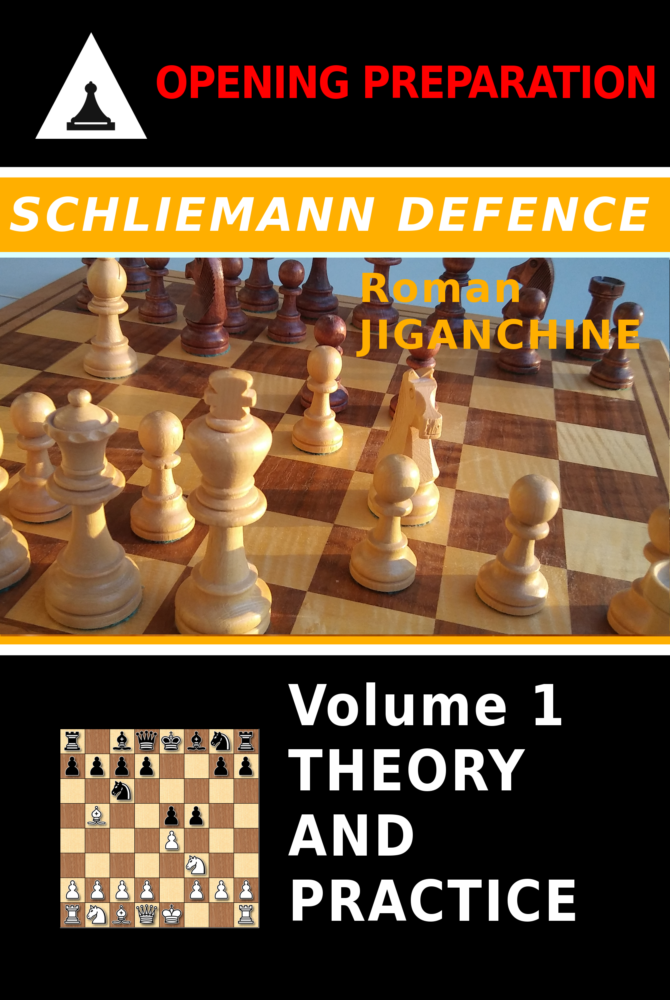

Schliemann Defence - Theory and Practice
Created Thursday 07 December 2017
Amazon | Kobo | Google Play | Paperback
Schliemann Defence is known as the Jaenisch Gambit especially in Russian literature, because it is considered that Carl Jaenisch was the first chess player to seriously analyze this response to 3.Bb5. It is an excellent practical choice for a chess player, because it leads to a rather special set of positions, that are not very familiar to most players on the White side, so an expert Black Schliemann player will often get to show off his better understanding of pawn structures and piece maneuver common to this variation, making it possible to take over the initiative and play for a win in every game. I suggest a careful study of illustrative games to better absorb those themes, in addition to practicing this opening in blitz and rapid games to get a better feel for them. Today many strong chess players occasionally play it, with Teimour Radjabov being one of the main proponents, as you will see in the example games. Levon Aronian has also tried it a few times, and other top players who have it in their repertoire include Vadim Zvjaginsev, Alexander Khalifman, Ivan Sokolov and Liviu Dieter Nisipeanu. Magnus Carlsen himself tried it on a couple of occasions. Among the players who played it in the previous decades, one can name Ventzislav Inkiov and Ratmir Kholmov. The player's index at the end of the ebook should be a starting point to finding key players and studying their games.
Upon studying this book and adopting the Schliemann, you will discover that playing this line has the following benefits:
- Black enforces his variation on White as early as the third move, and thus takes most of the theoretical battles to his own "home turf"
- Black himself has to sharpen up his playing instincts from the very early stage of the game and play as concrete moves as possible, because theory tends to not go very far in the Schliemann; it is rare to be blitzing out theoretical lines anywhere past move 10, if not move 5
- The nature of arising positions, where Black most often has a strong center and/or two bishops - allows a player to develop a good sense of initiative if he or she does not have one already
- The same applies in positions where Black gambits a pawn and plays for compensation, either in the middlegame or in the endgame
- If one has not played similar risky sharp openings before, and/or has discarded gambits like the Schliemann as too positionally unsound - playing it will expand their positional horizons and broaden understanding of chess in general

There has not been a dedicated book on the Schliemann in recent years, and this publication is meant to fill that gap. The book is structured in such a way that each section presents the theoretical variations, followed by some games by top players that illustrate the typical ideas for each variation. The first few sections are heavy on theory, as White tries to directly refute 3 ...f5, while the consequent chapters focus more on understanding typical ideas and pawn structures as White takes a more solid and positionally sound approach.